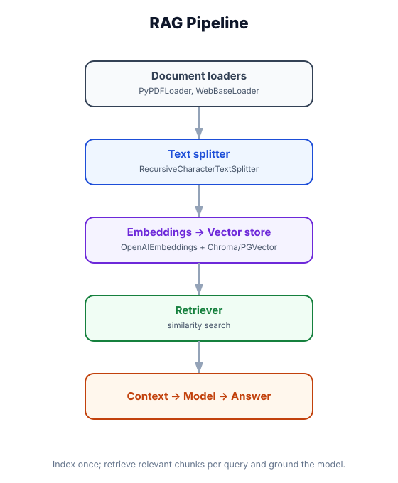

RAG Fundamentals — Giving Agents a Memory of Your Docs
What you'll learn: The three phases of RAG (index, retrieve, generate), how to build a working RAG pipeline with LangChain's document loaders, text splitters, embeddings, and vector stores, and how to surface retrieval as an agent tool.

↗ Open full size · ⬇ Edit in Excalidraw — labels use real LangChain classes.
A closed-book exam tests only what you memorized. An open-book exam lets you consult your notes — but you still need to know how to find the right page quickly and understand what you read. RAG is the open-book exam for AI: instead of encoding all facts into the model's weights, you give the model access to a reference library it can search at query time.
The Three Phases of RAG
Phase 1: Indexing Documents
from langchain_community.document_loaders import PyPDFLoader, DirectoryLoader, WebBaseLoader
from langchain_text_splitters import RecursiveCharacterTextSplitter
from langchain_openai import OpenAIEmbeddings
from langchain_chroma import Chroma
from langchain_core.documents import Document
# ── Step 1: Load documents ─────────────────────────────────────────────────────
# From PDF
pdf_loader = PyPDFLoader("company_handbook.pdf")
# From a directory of text/markdown files
dir_loader = DirectoryLoader("./docs/", glob="**/*.md")
# From a webpage
web_loader = WebBaseLoader("https://docs.example.com/api-reference")
# Load all sources
docs = []
docs.extend(pdf_loader.load())
docs.extend(dir_loader.load())
docs.extend(web_loader.load())
print(f"Loaded {len(docs)} documents")
# ── Step 2: Split into chunks ──────────────────────────────────────────────────
# Recursive splitter respects natural text boundaries (paragraphs → sentences → words)
splitter = RecursiveCharacterTextSplitter(
chunk_size=1000, # characters per chunk
chunk_overlap=200, # overlap to prevent cutting mid-thought
length_function=len,
separators=["\n\n", "\n", " ", ""],
)
chunks = splitter.split_documents(docs)
print(f"Created {len(chunks)} chunks")
# Each chunk is a Document with page_content + metadata
print(chunks[0].page_content[:200])
print(chunks[0].metadata) # {"source": "company_handbook.pdf", "page": 0}
# ── Step 3: Embed + store in Chroma ───────────────────────────────────────────
embeddings = OpenAIEmbeddings(model="text-embedding-3-small")
# This embeds all chunks and persists to disk
vectorstore = Chroma.from_documents(
documents=chunks,
embedding=embeddings,
persist_directory="./chroma_db", # saves to disk for reuse
collection_name="company_docs",
)
print(f"Indexed {vectorstore._collection.count()} vectors")
# ── Reload an existing index later ────────────────────────────────────────────
vectorstore = Chroma(
persist_directory="./chroma_db",
embedding_function=embeddings,
collection_name="company_docs",
)Phase 2 & 3: Retrieve and Generate
from langchain_openai import ChatOpenAI
from langchain_core.messages import HumanMessage, SystemMessage
from langchain_core.prompts import ChatPromptTemplate
# ── Retriever: wraps the vector store ─────────────────────────────────────────
retriever = vectorstore.as_retriever(
search_type="similarity",
search_kwargs={"k": 4} # return top 4 most similar chunks
)
# ── Retrieve relevant chunks for a query ──────────────────────────────────────
query = "What is the vacation policy for remote employees?"
relevant_docs = retriever.invoke(query)
for i, doc in enumerate(relevant_docs):
print(f"--- Chunk {i+1} (source: {doc.metadata.get('source')}) ---")
print(doc.page_content[:300])
# ── Generate a grounded answer ─────────────────────────────────────────────────
llm = ChatOpenAI(model="gpt-4o-mini")
def rag_answer(query: str) -> str:
# Retrieve
docs = retriever.invoke(query)
context = "\n\n---\n\n".join(d.page_content for d in docs)
# Generate
prompt = ChatPromptTemplate.from_messages([
("system", """You are a helpful assistant. Answer the user's question using ONLY the provided context.
If the answer is not in the context, say "I don't have that information in the provided documents."
Do not make up information.
Context:
{context}"""),
("human", "{question}"),
])
response = llm.invoke(
prompt.format_messages(context=context, question=query)
)
return response.content
print(rag_answer("What is the vacation policy for remote employees?"))RAG as an Agent Tool
from langchain.agents import create_agent
from langchain.chat_models import init_chat_model
from langchain.tools import tool
from langchain.tools import ToolRuntime
# ── Expose retrieval as a tool the agent can call ──────────────────────────────
@tool
def search_company_docs(query: str) -> str:
"""Search the company knowledge base for relevant information.
Use this when answering questions about company policy, product documentation,
procedures, or any internal knowledge.
Args:
query: The specific question or topic to search for.
"""
docs = retriever.invoke(query)
if not docs:
return "No relevant information found in the knowledge base."
results = []
for doc in docs:
source = doc.metadata.get("source", "unknown")
results.append(f"[Source: {source}]\n{doc.page_content}")
return "\n\n---\n\n".join(results)
@tool
def search_product_faq(query: str) -> str:
"""Search the product FAQ for answers to common questions.
Args:
query: The question to look up in the FAQ.
"""
# Could use a different vector store for FAQ-specific content
faq_docs = faq_retriever.invoke(query)
return "\n\n".join(d.page_content for d in faq_docs)
# Create an agent with RAG tools alongside regular tools
agent = create_agent(
model=init_chat_model("openai:gpt-4o-mini"),
tools=[search_company_docs, search_product_faq, web_search],
system_prompt="""You are a customer support agent.
For product questions: use search_product_faq first.
For policy questions: use search_company_docs.
Only use web_search if the knowledge base has no relevant information.""",
)
result = agent.invoke({
"messages": [HumanMessage("What is your refund policy for annual subscriptions?")]
})
print(result["messages"][-1].content)Choosing a Vector Store
🧪 Chroma (dev/prototyping)
pip install langchain-chroma. Runs in-process or as a server. Persists to disk. Best for local dev, small datasets (<1M docs), no infra required.
🐘 pgvector (production SQL)
pip install langchain-postgres. Adds vector search to PostgreSQL. Best if you already use Postgres — no new service required.
⚡ Pinecone (managed cloud)
pip install langchain-pinecone. Fully managed, horizontally scalable, real-time updates. Best for large datasets (>1M docs) in production.
🔍 Weaviate / Qdrant
Open-source, self-hostable vector DBs with advanced filtering, hybrid search, and multi-tenancy. Good for complex deployments needing fine control.
All vector stores expose the same LangChain interface: .as_retriever(), .similarity_search(query), .similarity_search_with_score(query). Switching is a one-line import change.
Too-small chunks (under 200 chars) lose surrounding context — the model can't understand a fragment. Too-large chunks (over 2,000 chars) dilute relevance — you retrieve a wall of text, most of which is unrelated to the query. Start with chunk_size=1000 and chunk_overlap=200 and tune based on your content type. Code files often do better with smaller chunks; book chapters with larger ones.
🏛️ Legal Research Assistant
A law firm indexes 50,000 case documents and statutes into pgvector. When a lawyer asks "find precedents for GDPR liability in cross-border data transfers", the agent calls search_legal_docs(query) which runs a similarity search returning the 6 most relevant case excerpts. The model synthesizes these into a structured legal memo with citations. The entire retrieval + generation takes under 4 seconds — what would take hours of manual research.
RAG has three phases: index (split → embed → store), retrieve (embed query → similarity search → top-k chunks), generate (inject chunks → model answers). Use RecursiveCharacterTextSplitter with chunk_size=1000 as a starting point. Expose your retriever as an agent @tool — the agent decides when to search. For dev: Chroma. For production SQL: pgvector. For scale: Pinecone. All share the same LangChain retriever interface.